Benutzerprofil verwalten
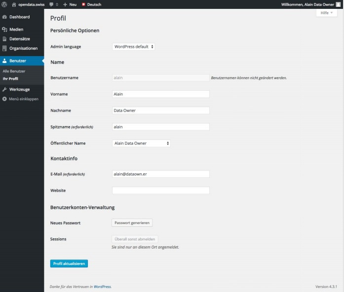
Persönliche Optionen
- Admin language
Wählen Sie aus dem Dropdown-Menu die Sprache aus, in der Sie Ihr Administrations-Interface nutzen möchten.
Name
- Benutzername, Spitzname, etc. (* Pflichtfeld)
Bis auf den Benutzernamen können Sie alle Angaben selbst verwalten. Um diesen zu ändern oder weitere Benutzer zu erstellen, wenden Sie sich an den Application-Manager.
Kontaktinfo
- E-Mail-Adresse (* Pflichtfeld)
Benutzerkonten-Verwaltung
- Neues Passwort (* Pflichtfeld)
Klicken Sie auf die Schaltfläche 'Passwort generieren', um ein E-Mail mit einem Link zum Passwort-Erstellen zu erhalten.
Änderungen speichern
Bestätigen Sie Ihre Änderungen mit einem Klick auf die Schalt- fläche 'Profil aktualisieren'.
Hinweise zur Mehrsprachigkeit
Metadaten von Datensätzen und Ressourcen, Organisations-Informationen
-
Empfehlung: Wenn möglich sollten Sie versuchen, die Titel, Beschreibungen oder Schlagwörter in den vier Sprachen (EN/DE/FR/IT) zu erfassen.
-
Das System gewährleistet über einen 'Fallback', dass die Texte einer verfügbaren Sprache angezeigt werden, falls sie nicht in der vom Nutzer ausgewählten Sprache erfasst sind.
-
Die Reihenfolge des 'Fallback' ist: DE → FR → IT → EN
Hinweise zu Umlauten, Accents, Leerzeichen
Schlagwörter und Names (Slugs)
-
Beim Erfassen normalisiert das System alle Angaben, welche für 'Slugs' (Elemente von Links) benötigt werden.
-
Umlaute (ä, ö, ü) werden ersetzt durch a, o, u.
-
Accents (à, â, ç, é, è, ô, ù) werden ersetzt durch a, c, e, o, u.
-
Leerzeichen werden ersetzt durch Divis (-).
Metadaten via Formular / XML-Import verwalten
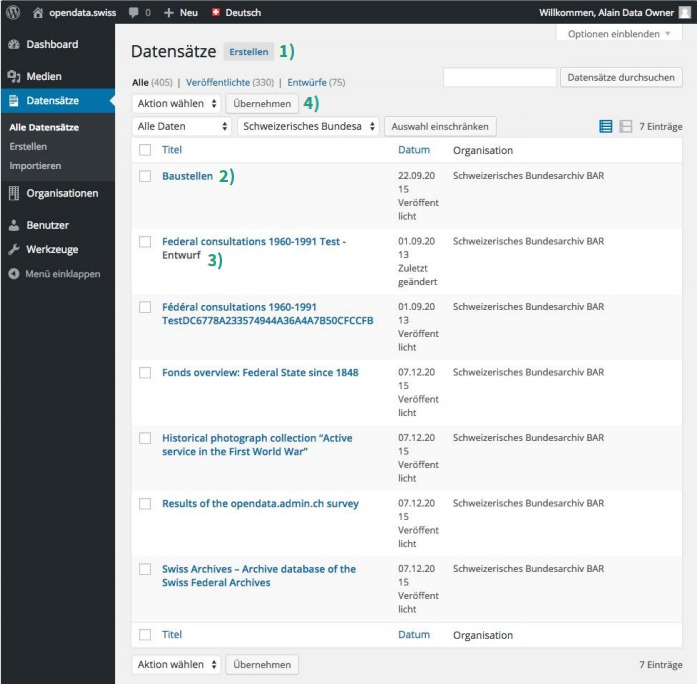
1) Neuen Datensatz via Formular erstellen
Klicken Sie auf die Schaltfläche 'Erstellen', um das Metadaten- Formular (→ S. 4) zu öffnen.
2) Datensatz via Formular bearbeiten
Klicken Sie auf den Titel eines Datensatzes Ihrer Organisation, um die Metadaten im Formular (→ S. 4) zu bearbeiten.
3) Status des Datensatzes
Wird kein Status (→ S. 11) angezeigt, ist der Datensatz publiziert.
4) Massenbearbeitungs-Aktionen
- Wählen Sie mittels Häkchen in der Checkbox jene Datensätze aus, für die Sie eine gemeinsame Aktion durchführen wollen.
- Wählen Sie aus dem Dropdown-Menu die Aktion aus:
- 'Bearbeiten' Sie einzelne Metadaten mehrerer Datensätze.
- 'Exportieren' Sie alle Metadaten ein oder mehrerer Datensätze als XML-Datei (DCAT-AP Switzerland Standard).
- Zum Ausführen klicken Sie auf die Schaltfläche 'Übernehmen'.
5) Metadaten via XML-Import verwalten
- Wählen Sie eine dem DCAT-AP Switzerland Standard entsprechende XML-Datei aus.
- Klicken Sie auf die Schaltfläche 'Importieren'.
- Neue Datensätze werden mit Status 'Entwurf' erstellt. Metadaten bestehender Datensätze werden aktualisiert.
Aufbau des Metadaten-Formulars
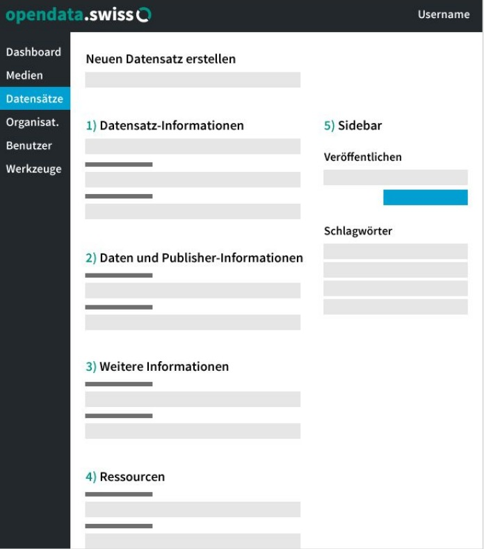
2a) Daten
4) Ressourcen
5) Sidebar
- Veröffentlichen und Aktualisieren
- Schlagwörter
1) Datensatz-Informationen
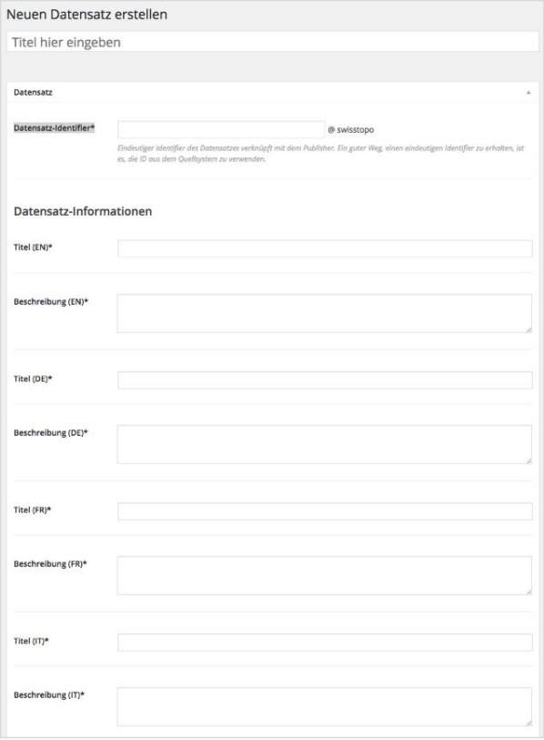
Neuen Datensatz erstellen / bearbeiten
- Titel hier eingeben / bearbeiten Dieser Titel bezeichnet den Datensatz im Backend. Aus ihm wird der Permalink des Datensatzes gebildet. Verändern Sie diesen Titel und den Permalink nicht mehr, nachdem der Datensatz publiziert ist!
Datensatz
- Datensatz-Identifier *
Eindeutiger Identifier des Datensatzes verknüpft mit dem Publisher. Ein guter Weg, einen eindeutigen Identifier zu erhalten, ist es, wenn Sie die ID aus dem Quellsystem verwenden.
- Titel (EN/DE/FR/IT) *
Geben Sie mindestens in einer Sprache einen Titel an.
- Beschreibung (EN/DE/FR/IT) *
Geben Sie mindestens in einer Sprache eine Beschreibung an.
- Pflichtfelder
2a) Daten
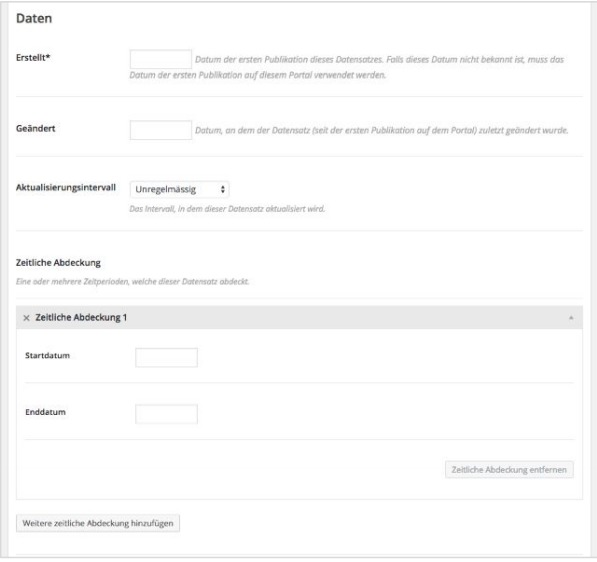
Daten
- Erstellt *
Das Datum der ersten Publikation dieses Datensatzes. Falls dieses Datum nicht bekannt ist, verwenden Sie das Datum der ersten Publikation auf dem Portal opendata.swiss.
-
Geändert Das Datum, an dem der Datensatz (seit der ersten Publikation auf dem Portal) zuletzt geändert wurde.
-
Aktualisierungsintervall Wählen Sie aus dem Dropdown-Menu das Intervall, in dem dieser Datensatz aktualisiert wird.
-
Zeitliche Abdeckung Geben Sie eine oder mehrere Zeitperioden an, welche dieser Datensatz abdeckt.
(* Pflichtfeld)
2b) Publisher-Informationen
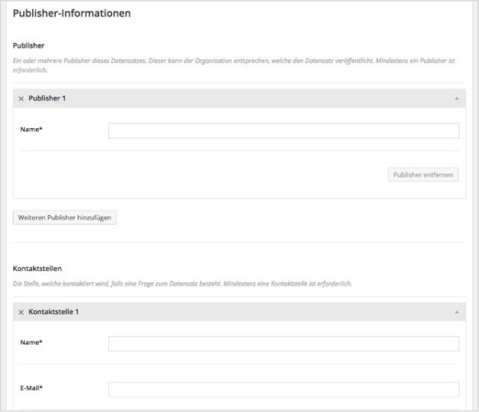
Publisher-Informationen
- Publisher *
Ein oder mehrere Publisher dieses Datensatzes. Dieser kann der Organisation entsprechen, welche den Datensatz veröffentlicht. Mindestens ein Publisher ist erforderlich.
- Kontaktstellen *
Die Stelle, welche von den Daten-Nutzern kontaktiert wird, falls eine inhaltliche Frage zum Datensatz besteht. Mindestens eine Kontaktstelle mit E-Mail-Adresse ist erforderlich.
(* Pflichtfelder)
3) Weitere Informationen
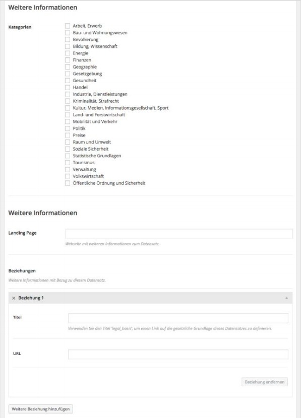
Weitere Informationen
- Kategorien
Wählen Sie eine oder mehrere thematische Kategorien aus, denen dieser Datensatz zugeordnet wird.
- Landing Page
Geben Sie eine Webseite an, auf der weitere Informationen zum Datensatz verfügbar sind.
- Beziehungen
Weitere Informationen mit Bezug zu diesem Datensatz.
Verwenden Sie den Titel 'legal_basis', um bei Bedarf einen Link auf die gesetzliche Grundlage dieses Datensatzes anzugeben. Der Link wird im Frontend dem Titel 'Gesetzliche Grundlage' hinterlegt.
- Verwandte Datensätze
Wählen Sie mittels Dropdown-Menu andere auf dem Portal verfügbare Datensätze aus, die eine inhaltliche Beziehung zu diesem Datensatz haben.
4) Ressourcen
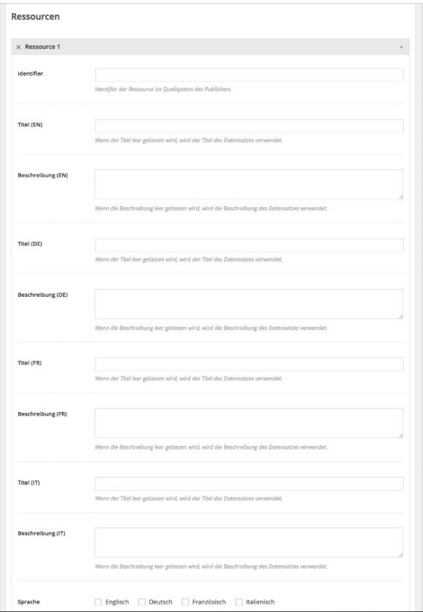
- Identifier Identifier der Ressource im Quellsystem des Publishers.
- Titel (EN/DE/FR/IT) Wird der Titel leer gelassen, wird der Titel des Datensatzes verwendet.
- Beschreibung (EN/DE/FR/IT) Wird die Beschreibung leer gelassen, wird die Beschreibung des Datensatzes verwendet.
- Sprache Sprachen, in denen diese Ressource vorliegt. Falls die Ressource sprachunabhängig ist, wählen Sie keine Sprache aus.
- Erstellt * Das Datum der ersten Publikation dieser Ressource.
- Geändert Das Datum der letzten Änderung dieser Ressource.
(* Pflichtfeld)
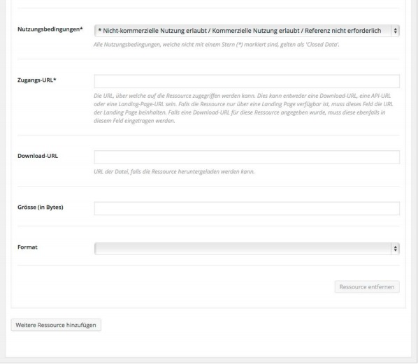
Nutzungsbedingungen
Wählen Sie aus dem Dropdown-Menu eine der Nutzungsbedingungen aus.
Alle Nutzungsbedingungen, die nicht mit einem Stern (*) markiert sind, gelten als 'Closed Data'.
Zugangs-URL
Die URL, über welche auf die Ressource zugegriffen werden kann. Dies kann entweder eine Download-URL, eine API-URL oder eine Landing-Page-URL sein. Falls die Ressource nur über eine Landing Page verfügbar ist, muss dieses Feld die URL der Landing Page beinhalten. Falls eine Download-URL (siehe unten) für diese Ressource angegeben wurde, muss diese ebenfalls in diesem Feld eingetragen werden.
Download-URL
URL der Datei, falls die Ressource heruntergeladen werden kann.
Grösse (in Bytes)
Format
Wählen Sie aus dem Dropdown-Menu eines der Formate aus.
(* Pflichtfelder)
5) Sidebar
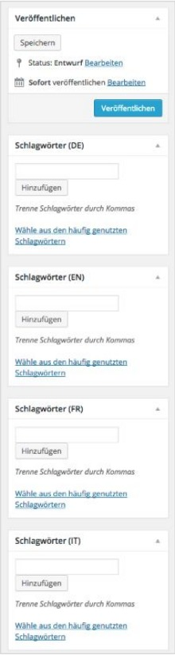
Veröffentlichen und Aktualisieren
Status Geben Sie den Status des Datensatzes an:
- Entwurf: Sie bearbeiten die Metadaten des Datensatzes weiter.
- Veröffentlicht: Der Datensatz ist auf opendata.swiss publiziert.
Veröffentlichen / Aktualisieren
- Sofort veröffentlichen: Publizieren Sie den Datensatz mit einem Klick auf die Schaltfläche 'Veröffentlichen'.
- Veröffentlichung planen: Nutzen Sie die Datums- und Zeitangabe, um die Veröffentlichung eines Datensatzes in der Zukunft zu festzulegen und klicken Sie auf die Schaltfläche 'Planen'. Die Veröffentlichung lässt sich verlässlich auf ein bestimmtes Datum planen; die Festlegung einer Uhrzeit kann um ± 1 Stunde von der effektiven Publikation abweichen.
- Aktualisieren: Haben Sie Metadaten eines Datensatzes bearbeitet, der bereits publiziert ist, publizieren Sie Ihre Änderungen mit einem Klick auf die Schaltfläche 'Aktualisieren'.
Schlagwörter
- Schlagwörter (EN/DE/FR/IT) Geben Sie ein oder mehrere Schlagwörter zum Datensatz – getrennt durch Kommas – an oder wählen Sie per Klick ein oder mehrere häufig genutze Schlagwörter aus.
Im Formular Begriffe suchen
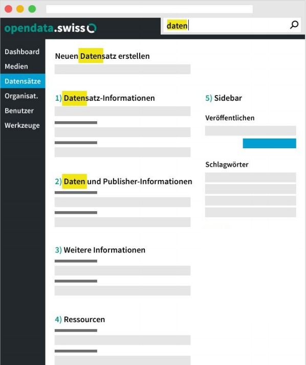
Wie öffnen Sie den Browser-Suchbalken?
- Drücken Sie den Tastaturbefehl Ctrl+F oder
- Wählen Sie im Browsermenu Edit > Find
Geben Sie einen Begriff ins Textfeld des Suchbalkens ein und der Browser markiert den Begriff im Formular.
Detailansicht eines Datensatzes
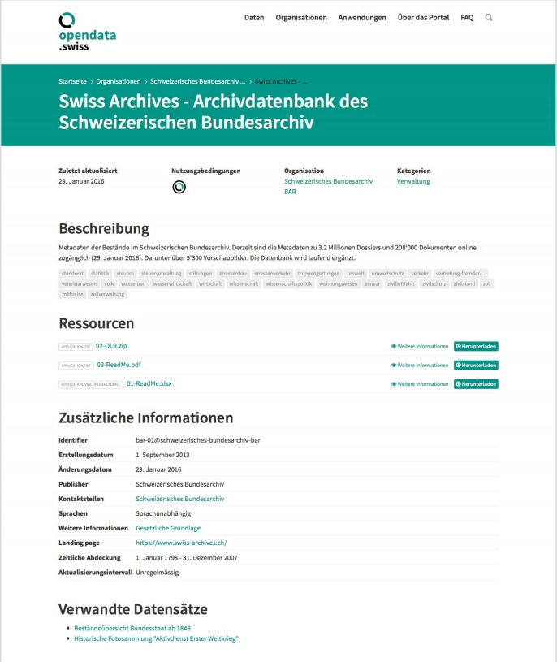
Informationen
- Titel des Datensatzes
- Zuletzt aktualisiert
- Nutzungsbedingungen
- Datenpublizierende Organisation
- Thematische Kategorien
- Beschreibung des Datensatzes
- Schlagwörter
- Ressourcen / Formate
- Zusätzliche Informationen
- Verwandte Datensätze
Detailansicht einer Ressource
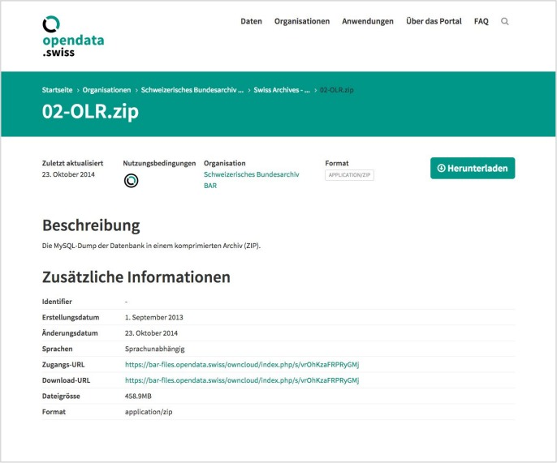
Informationen
- Titel der Ressource
- Zuletzt aktualisiert
- Nutzungsbedingungen
- Datenpublizierende Organisation
- Format der Ressource
- Beschreibung der Ressource
- Zusätzliche Informationen
Organisations-Informationen verwalten
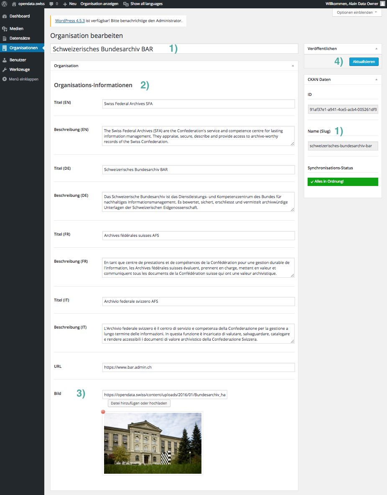
1) Titel / Name (Slug) Dieser Titel bezeichnet die Organisation im Backend. Aus ihm wird der 'Name (Slug)' der Organisation gebildet. Verändern Sie diesen Titel und den 'Name (Slug)' nicht mehr, nachdem die Organisation Datensätze publiziert hat!
2) Organisations-Informationen
- Titel (EN/DE/FR/IT)
Geben Sie mindestens in einer Sprache einen Titel an. Dieser wird auf dem Portal angezeigt
- Beschreibung (EN/DE/FR/IT)
Geben Sie mindestens in einer Sprache eine Beschreibung an(nur Text). Diese wird auf dem Portal angezeigt
- URL
Eine URL, welche zu weiteren Informationen dieser Organisation führt
3) Bild Wählen Sie eine Bild-Datei aus und klicken Sie auf die Schaltfläche 'Datei hinzufügen oder hochladen'.
4) Veröffentlichen / Aktualisieren Nachdem Sie die Informationen angegeben oder Änderungen vorgenommen haben, publizieren bzw. aktualisieren Sie diese mit einem Klick auf die entsprechende Schaltfläche.
- Pflichtfelder
Detailansicht einer Organisation
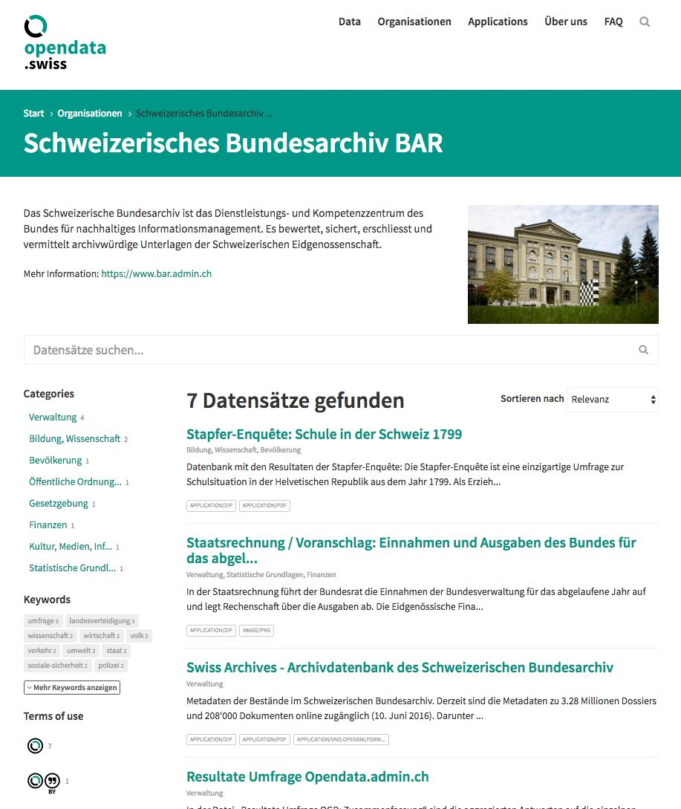
Informationen
- Titel der Organisation
- Beschreibung der Organisation
- Link zu weiteren Informationen der Organisation
- Bild der Organisation